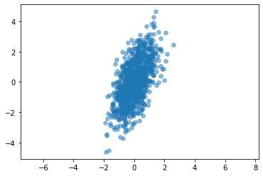

Contents
import pyro
import torch
dist = pyro.distributions
import matplotlib.pyplot as plt
data_dim = 2
latent_dim = 1
num_datapoints = 100
z = dist.Normal(
loc=torch.zeros([latent_dim, num_datapoints]),
scale=torch.ones([latent_dim, num_datapoints]),)
w = dist.Normal(
loc=torch.zeros([data_dim, latent_dim]),
scale=5.0 * torch.ones([data_dim, latent_dim]),
)
mu = torch.tensor([0., 0.])
cov = torch.tensor([[0.5, 0.6], [0.6, 2]])
X = dist.MultivariateNormal(mu, covariance_matrix=cov)
data = X.sample([1000])
plt.scatter(data[:, 0], data[:, 1], s = 30, alpha = 0.5)
plt.axis('equal');

data.shape
torch.Size([1000, 2])
pyro.clear_param_store()
def model(data, latent_dim):
N, D = data.shape
M = latent_dim
print(f"M={M}")
B = pyro.param("B", torch.randn(D, M))
mu = pyro.param("mu", torch.randn(D))
sigma = pyro.param("sigma", torch.tensor(1.), constraint=dist.constraints.greater_than(0.05))
#print(B.shape, mu.shape, sigma.shape)
with pyro.plate("data", N):
eps = pyro.sample("eps", dist.Normal(torch.zeros(M, 1), sigma*torch.ones(M, 1)))
z = pyro.sample("z", dist.Normal(torch.zeros(1, M), torch.ones(1, M)))
print(z.shape, eps.shape)
return pyro.sample(
"obs",dist.Normal(z@B, sigma**2), obs=data)
model(data[:100], 1)
M=1
torch.Size([1, 100]) torch.Size([1, 100])
---------------------------------------------------------------------------
RuntimeError Traceback (most recent call last)
Input In [90], in <module>
----> 1 model(data[:100], 1)
Input In [89], in model(data, latent_dim)
13 z = pyro.sample("z", dist.Normal(torch.zeros(1, M), torch.ones(1, M)))
14 print(z.shape, eps.shape)
15 return pyro.sample(
---> 16 "obs",dist.Normal(z@B, sigma**2), obs=data)
RuntimeError: mat1 and mat2 shapes cannot be multiplied (1x100 and 2x1)
M = 1
dist.Normal(torch.zeros(M), torch.ones(M)).sample([1]).shape
torch.Size([1, 1])
pyro.param("z")
---------------------------------------------------------------------------
KeyError Traceback (most recent call last)
Input In [72], in <module>
----> 1 pyro.param("z")
File ~/miniforge3/lib/python3.9/site-packages/pyro/primitives.py:78, in param(name, init_tensor, constraint, event_dim)
76 # Note effectful(-) requires the double passing of name below.
77 args = (name,) if init_tensor is None else (name, init_tensor)
---> 78 return _param(*args, constraint=constraint, event_dim=event_dim, name=name)
File ~/miniforge3/lib/python3.9/site-packages/pyro/poutine/runtime.py:264, in effectful.<locals>._fn(*args, **kwargs)
261 is_observed = value is not None
263 if not am_i_wrapped():
--> 264 return fn(*args, **kwargs)
265 else:
266 msg = {
267 "type": type,
268 "name": name,
(...)
280 "infer": infer,
281 }
File ~/miniforge3/lib/python3.9/site-packages/pyro/params/param_store.py:215, in ParamStoreDict.get_param(self, name, init_tensor, constraint, event_dim)
199 """
200 Get parameter from its name. If it does not yet exist in the
201 ParamStore, it will be created and stored.
(...)
212 :rtype: torch.Tensor
213 """
214 if init_tensor is None:
--> 215 return self[name]
216 else:
217 return self.setdefault(name, init_tensor, constraint)
File ~/miniforge3/lib/python3.9/site-packages/pyro/params/param_store.py:106, in ParamStoreDict.__getitem__(self, name)
102 def __getitem__(self, name):
103 """
104 Get the *constrained* value of a named parameter.
105 """
--> 106 unconstrained_value = self._params[name]
108 # compute the constrained value
109 constraint = self._constraints[name]
KeyError: 'z'
pyro.clear_param_store()
pyro.enable_validation(True)
def model(data, latent_dim):
N, D = data.shape
M = latent_dim
print(f"M={M}")
B = pyro.param("B", torch.randn(D, M))
mu = pyro.param("mu", torch.randn(D))
sigma = pyro.param("sigma", torch.tensor(1.), constraint=dist.constraints.greater_than(0.05))
for i in pyro.plate("data", N):
#z = pyro.sample("z_{}".format(i), dist.Normal(torch.zeros(M), 1.0).to_event(1))
z = pyro.sample("z_{}".format(i), dist.Normal(torch.zeros(M), 1.0))
eps = pyro.sample("eps_{}".format(i), dist.Normal(torch.zeros(M), sigma))
#print(B.shape, z.shape)
pyro.sample("observed_{}".format(i), dist.Normal(B @ z + mu + eps, 1.0).to_event(1), obs=data[i])
z.shape, eps.shape
(torch.Size([10]), torch.Size([1, 10]))
pyro.clear_param_store()
pyro.render_model(model, model_args=(data[:4], 2), render_distributions=True)
M=2
pyro.clear_param_store()
model(data[:100], 1)
M=1
pyro.clear_param_store()
def model(data, latent_dim):
N, D = data.shape
M = latent_dim
print(f"M={M}")
B = pyro.param("B", torch.randn(D, M))
mu = pyro.param("mu", torch.randn(D))
sigma = pyro.param("sigma", torch.tensor(1.), constraint=dist.constraints.greater_than(0.05))
#print(B.shape, mu.shape, sigma.shape)
with pyro.plate("data", N):
eps = pyro.sample("eps", dist.Normal(torch.zeros(M, 1), sigma*torch.ones(M, 1)))
z = pyro.sample("z", dist.Normal(torch.zeros(M, 1), torch.ones(M, 1)))
m = torch.matmul(z.t(), B.t())
return pyro.sample(
"obs",dist.Normal(m.t(), sigma**2), obs=data)
model(data[:10], 1)
#autoguide_map(data[:10], 1)['z'].shape
M=1
tensor([[-0.6036, 0.1739],
[-0.6823, -1.3224],
[ 1.0313, 1.7722],
[-0.8721, -0.4884],
[ 0.4547, -0.1429],
[ 1.6045, 2.1906],
[-0.0781, -2.8031],
[ 0.7160, 0.5610],
[-0.0528, 1.4058],
[-0.1891, 0.6692]])
autoguide_map = pyro.infer.autoguide.AutoDelta(model)
#train(original_model, autoguide_map)
#print("Our MAP estimate of the latent fairness is {:.3f}".format(
# autoguide_map.median(data)["latent_fairness"].item()))
autoguide_map
AutoDelta()
train(model, autoguide_map)
M=1
M=1
---------------------------------------------------------------------------
ValueError Traceback (most recent call last)
File ~/miniforge3/lib/python3.9/site-packages/pyro/poutine/trace_struct.py:230, in Trace.compute_log_prob(self, site_filter)
229 try:
--> 230 log_p = site["fn"].log_prob(
231 site["value"], *site["args"], **site["kwargs"]
232 )
233 except ValueError as e:
File ~/miniforge3/lib/python3.9/site-packages/torch/distributions/normal.py:73, in Normal.log_prob(self, value)
72 if self._validate_args:
---> 73 self._validate_sample(value)
74 # compute the variance
File ~/miniforge3/lib/python3.9/site-packages/torch/distributions/distribution.py:276, in Distribution._validate_sample(self, value)
275 if i != 1 and j != 1 and i != j:
--> 276 raise ValueError('Value is not broadcastable with batch_shape+event_shape: {} vs {}.'.
277 format(actual_shape, expected_shape))
278 try:
ValueError: Value is not broadcastable with batch_shape+event_shape: torch.Size([100, 2]) vs torch.Size([2, 100]).
The above exception was the direct cause of the following exception:
ValueError Traceback (most recent call last)
Input In [173], in <module>
----> 1 train(model, autoguide_map)
Input In [172], in train(model, guide, lr, n_steps)
7 svi = SVI(model, guide, adam, loss=Trace_ELBO())
9 for step in range(n_steps):
---> 10 loss = svi.step(data[:100], 1)
11 if step % 50 == 0:
12 print('[iter {}] loss: {:.4f}'.format(step, loss))
File ~/miniforge3/lib/python3.9/site-packages/pyro/infer/svi.py:145, in SVI.step(self, *args, **kwargs)
143 # get loss and compute gradients
144 with poutine.trace(param_only=True) as param_capture:
--> 145 loss = self.loss_and_grads(self.model, self.guide, *args, **kwargs)
147 params = set(
148 site["value"].unconstrained() for site in param_capture.trace.nodes.values()
149 )
151 # actually perform gradient steps
152 # torch.optim objects gets instantiated for any params that haven't been seen yet
File ~/miniforge3/lib/python3.9/site-packages/pyro/infer/trace_elbo.py:140, in Trace_ELBO.loss_and_grads(self, model, guide, *args, **kwargs)
138 loss = 0.0
139 # grab a trace from the generator
--> 140 for model_trace, guide_trace in self._get_traces(model, guide, args, kwargs):
141 loss_particle, surrogate_loss_particle = self._differentiable_loss_particle(
142 model_trace, guide_trace
143 )
144 loss += loss_particle / self.num_particles
File ~/miniforge3/lib/python3.9/site-packages/pyro/infer/elbo.py:182, in ELBO._get_traces(self, model, guide, args, kwargs)
180 else:
181 for i in range(self.num_particles):
--> 182 yield self._get_trace(model, guide, args, kwargs)
File ~/miniforge3/lib/python3.9/site-packages/pyro/infer/trace_elbo.py:57, in Trace_ELBO._get_trace(self, model, guide, args, kwargs)
52 def _get_trace(self, model, guide, args, kwargs):
53 """
54 Returns a single trace from the guide, and the model that is run
55 against it.
56 """
---> 57 model_trace, guide_trace = get_importance_trace(
58 "flat", self.max_plate_nesting, model, guide, args, kwargs
59 )
60 if is_validation_enabled():
61 check_if_enumerated(guide_trace)
File ~/miniforge3/lib/python3.9/site-packages/pyro/infer/enum.py:75, in get_importance_trace(graph_type, max_plate_nesting, model, guide, args, kwargs, detach)
72 guide_trace = prune_subsample_sites(guide_trace)
73 model_trace = prune_subsample_sites(model_trace)
---> 75 model_trace.compute_log_prob()
76 guide_trace.compute_score_parts()
77 if is_validation_enabled():
File ~/miniforge3/lib/python3.9/site-packages/pyro/poutine/trace_struct.py:236, in Trace.compute_log_prob(self, site_filter)
234 _, exc_value, traceback = sys.exc_info()
235 shapes = self.format_shapes(last_site=site["name"])
--> 236 raise ValueError(
237 "Error while computing log_prob at site '{}':\n{}\n{}".format(
238 name, exc_value, shapes
239 )
240 ).with_traceback(traceback) from e
241 site["unscaled_log_prob"] = log_p
242 log_p = scale_and_mask(log_p, site["scale"], site["mask"])
File ~/miniforge3/lib/python3.9/site-packages/pyro/poutine/trace_struct.py:230, in Trace.compute_log_prob(self, site_filter)
228 if "log_prob" not in site:
229 try:
--> 230 log_p = site["fn"].log_prob(
231 site["value"], *site["args"], **site["kwargs"]
232 )
233 except ValueError as e:
234 _, exc_value, traceback = sys.exc_info()
File ~/miniforge3/lib/python3.9/site-packages/torch/distributions/normal.py:73, in Normal.log_prob(self, value)
71 def log_prob(self, value):
72 if self._validate_args:
---> 73 self._validate_sample(value)
74 # compute the variance
75 var = (self.scale ** 2)
File ~/miniforge3/lib/python3.9/site-packages/torch/distributions/distribution.py:276, in Distribution._validate_sample(self, value)
274 for i, j in zip(reversed(actual_shape), reversed(expected_shape)):
275 if i != 1 and j != 1 and i != j:
--> 276 raise ValueError('Value is not broadcastable with batch_shape+event_shape: {} vs {}.'.
277 format(actual_shape, expected_shape))
278 try:
279 support = self.support
ValueError: Error while computing log_prob at site 'obs':
Value is not broadcastable with batch_shape+event_shape: torch.Size([100, 2]) vs torch.Size([2, 100]).
Trace Shapes:
Param Sites:
B 2 1
mu 2
sigma
Sample Sites:
eps dist 1 100 |
value 1 100 |
log_prob 1 100 |
z dist 1 100 |
value 1 100 |
log_prob 1 100 |
obs dist 2 100 |
value 100 2 |
pyro.clear_param_store()
def model2(data,latent_dim):
N, D = data.shape
M = latent_dim
B = pyro.param("B", torch.randn(D, M))
mu = pyro.param("mu", torch.randn(D))
sigma = pyro.param("sigma", torch.tensor(1.), constraint=dist.constraints.greater_than(0.05))
eps = pyro.sample("eps", dist.Normal(torch.zeros(N, M), sigma*torch.ones(N, M)))
print(f"EPS: {eps.shape}")
z = pyro.sample("z", dist.Normal(torch.zeros(N, M), torch.ones(N, M)))
return pyro.sample(
"obs",dist.Normal(torch.matmul(z, B.t()) + mu + eps, sigma), obs=data)
pyro.clear_param_store()
model2(data[:100], 1).shape
EPS: torch.Size([100, 1])
/Users/nipun/miniforge3/lib/python3.9/site-packages/pyro/primitives.py:137: RuntimeWarning: trying to observe a value outside of inference at obs
warnings.warn(
torch.Size([100, 2])
pyro.render_model(model2, model_args=(data[:100], 1), render_distributions=True)
EPS: torch.Size([100, 1])
autoguide_map = pyro.infer.autoguide.AutoDelta(model2)
autoguide_map
AutoDelta()
autoguide_map(data[:100], 1)['eps'].shape, autoguide_map(data[:100], 1)['z'].shape
EPS: torch.Size([100, 1])
(torch.Size([100, 1]), torch.Size([100, 1]))
from pyro.infer import SVI, Trace_ELBO
def train(model, guide, lr=0.005, n_steps=201):
pyro.clear_param_store()
adam = pyro.optim.Adam({"lr": lr})
svi = SVI(model, guide, adam, loss=Trace_ELBO())
for step in range(n_steps):
loss = svi.step(data[:100], 1)
if step % 50 == 0:
print('[iter {}] loss: {:.4f}'.format(step, loss))
train(model2, autoguide_map)
EPS: torch.Size([100, 1])
---------------------------------------------------------------------------
ValueError Traceback (most recent call last)
Input In [280], in <module>
11 if step % 50 == 0:
12 print('[iter {}] loss: {:.4f}'.format(step, loss))
---> 13 train(model2, autoguide_map)
Input In [280], in train(model, guide, lr, n_steps)
7 svi = SVI(model, guide, adam, loss=Trace_ELBO())
9 for step in range(n_steps):
---> 10 loss = svi.step(data[:100], 1)
11 if step % 50 == 0:
12 print('[iter {}] loss: {:.4f}'.format(step, loss))
File ~/miniforge3/lib/python3.9/site-packages/pyro/infer/svi.py:145, in SVI.step(self, *args, **kwargs)
143 # get loss and compute gradients
144 with poutine.trace(param_only=True) as param_capture:
--> 145 loss = self.loss_and_grads(self.model, self.guide, *args, **kwargs)
147 params = set(
148 site["value"].unconstrained() for site in param_capture.trace.nodes.values()
149 )
151 # actually perform gradient steps
152 # torch.optim objects gets instantiated for any params that haven't been seen yet
File ~/miniforge3/lib/python3.9/site-packages/pyro/infer/trace_elbo.py:140, in Trace_ELBO.loss_and_grads(self, model, guide, *args, **kwargs)
138 loss = 0.0
139 # grab a trace from the generator
--> 140 for model_trace, guide_trace in self._get_traces(model, guide, args, kwargs):
141 loss_particle, surrogate_loss_particle = self._differentiable_loss_particle(
142 model_trace, guide_trace
143 )
144 loss += loss_particle / self.num_particles
File ~/miniforge3/lib/python3.9/site-packages/pyro/infer/elbo.py:182, in ELBO._get_traces(self, model, guide, args, kwargs)
180 else:
181 for i in range(self.num_particles):
--> 182 yield self._get_trace(model, guide, args, kwargs)
File ~/miniforge3/lib/python3.9/site-packages/pyro/infer/trace_elbo.py:57, in Trace_ELBO._get_trace(self, model, guide, args, kwargs)
52 def _get_trace(self, model, guide, args, kwargs):
53 """
54 Returns a single trace from the guide, and the model that is run
55 against it.
56 """
---> 57 model_trace, guide_trace = get_importance_trace(
58 "flat", self.max_plate_nesting, model, guide, args, kwargs
59 )
60 if is_validation_enabled():
61 check_if_enumerated(guide_trace)
File ~/miniforge3/lib/python3.9/site-packages/pyro/infer/enum.py:80, in get_importance_trace(graph_type, max_plate_nesting, model, guide, args, kwargs, detach)
78 for site in model_trace.nodes.values():
79 if site["type"] == "sample":
---> 80 check_site_shape(site, max_plate_nesting)
81 for site in guide_trace.nodes.values():
82 if site["type"] == "sample":
File ~/miniforge3/lib/python3.9/site-packages/pyro/util.py:437, in check_site_shape(site, max_plate_nesting)
433 for actual_size, expected_size in zip_longest(
434 reversed(actual_shape), reversed(expected_shape), fillvalue=1
435 ):
436 if expected_size != -1 and expected_size != actual_size:
--> 437 raise ValueError(
438 "\n ".join(
439 [
440 'at site "{}", invalid log_prob shape'.format(site["name"]),
441 "Expected {}, actual {}".format(expected_shape, actual_shape),
442 "Try one of the following fixes:",
443 "- enclose the batched tensor in a with pyro.plate(...): context",
444 "- .to_event(...) the distribution being sampled",
445 "- .permute() data dimensions",
446 ]
447 )
448 )
450 # Check parallel dimensions on the left of max_plate_nesting.
451 enum_dim = site["infer"].get("_enumerate_dim")
ValueError: at site "eps", invalid log_prob shape
Expected [], actual [100, 1]
Try one of the following fixes:
- enclose the batched tensor in a with pyro.plate(...): context
- .to_event(...) the distribution being sampled
- .permute() data dimensions
eps.shape, z.shape
(torch.Size([1000, 1]), torch.Size([1000, 1]))
data.shape
torch.Size([1000, 2])
torch.matmul(z, B.t()) , mu
(tensor([[-0.3174, 1.5780],
[ 0.0462, -0.2298],
[ 0.1120, -0.5566],
...,
[-0.0559, 0.2780],
[ 0.1789, -0.8892],
[ 0.1062, -0.5279]], grad_fn=<MmBackward0>),
tensor([-0.1872, 0.5512], requires_grad=True),
tensor([[-0.5046, 2.1292],
[-0.1409, 0.3214],
[-0.0752, -0.0054],
...,
[-0.2431, 0.8292],
[-0.0083, -0.3380],
[-0.0810, 0.0233]], grad_fn=<AddBackward0>))
with pyro.plate("data", N):
eps = pyro.sample("eps", dist.Normal(torch.zeros(M, 1), sigma*torch.ones(M, 1)))
z = pyro.sample("z", dist.Normal(torch.zeros(M, 1), torch.ones(M, 1)))
m = torch.matmul(z.t(), B.t())
return